Sat, 09 Jun 2012 07:26:00 · Wanderlust · iphone · japan · landscape · photography · tokyo · travel · 東京 · 日本
Uncensored: Tokyo Wide-angle
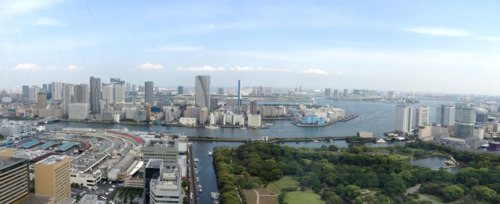
• View over Tokyo Bay as seen from Dentsu Tower, Tokyo.
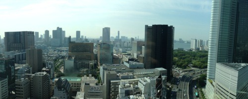
• View over Tokyo as seen from Mitsui Garden, Ginza, Tokyo.
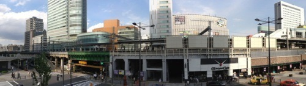
• Akihabara, Tokyo.
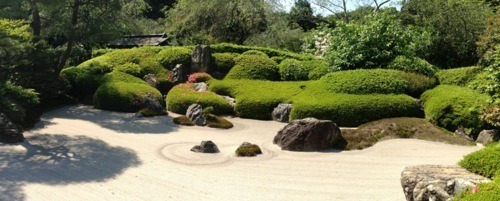 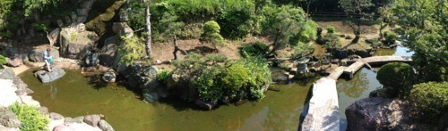 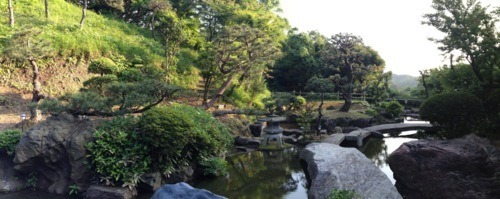
• Private backyard of a friend’s house. Undisclosed location.
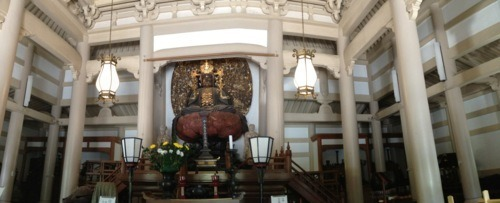
• Engoku-ji, Kita-Kamakura, Tokyo.
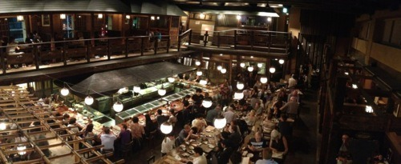
• Gonpachi (Kill Bill fight scene was filmed here), Tokyo.
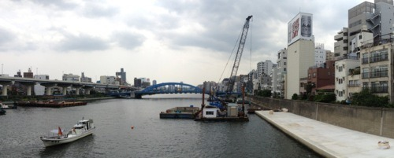
• Asakusa, Tokyo.
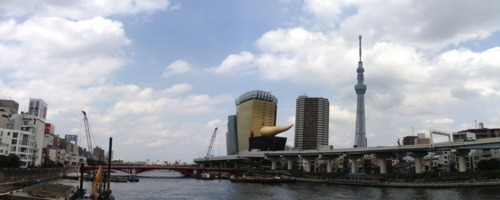
• Asahi Beer Hall and Tokyo Skytree, Asakusa, Tokyo.
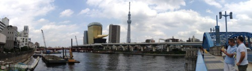
• Asakusa, Tokyo.
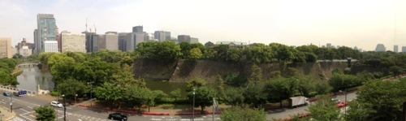
• View over Edo Castle from Tokyo Modern Art Museum.
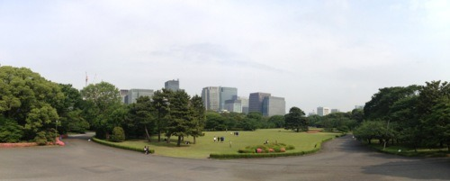
• Imperial Palace park, Tokyo.
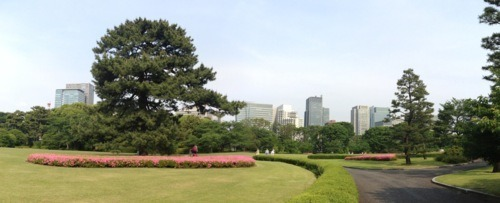
• Imperial Palace park, Tokyo.
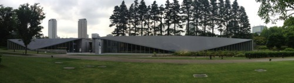
• 21_21 Design Sight Museum, Tokyo.
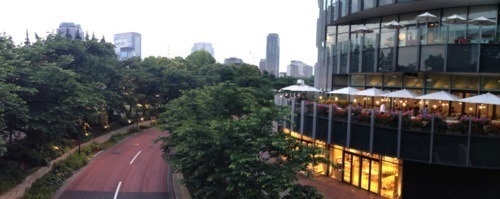
• Crossing Bridge, Tokyo Midtown, Roppongi, Tokyo.
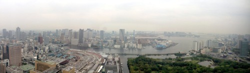
• View over Tokyo Bay
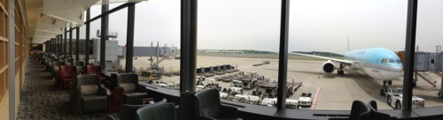
• さようなら東京
–
All photos were taken exclusively using iPhone 4s. No filter.